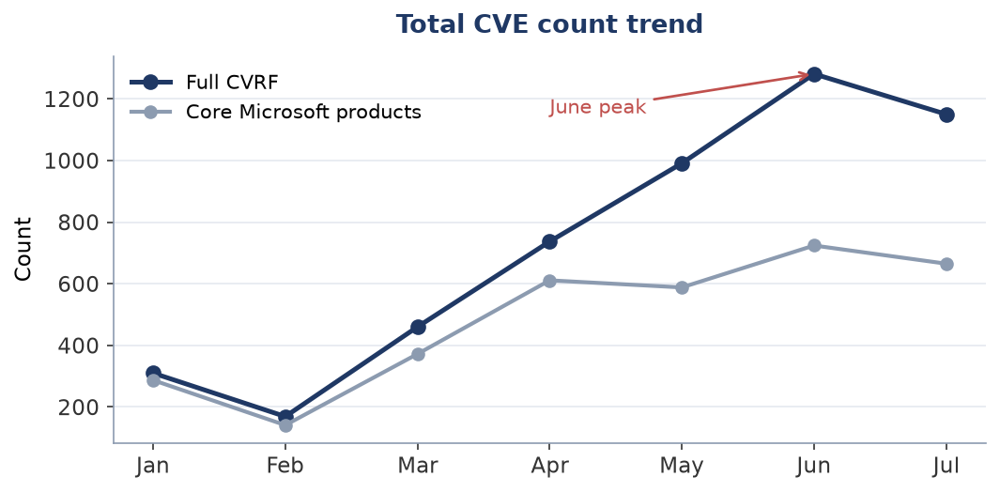
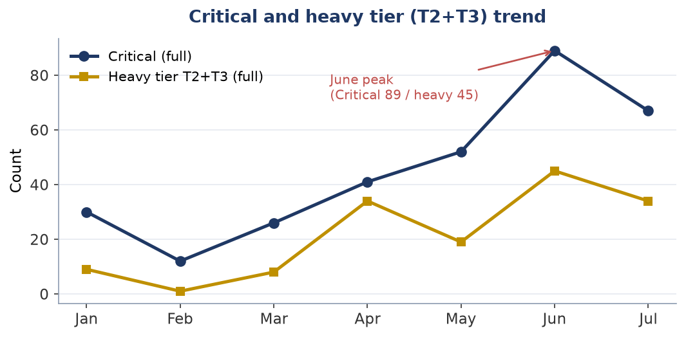
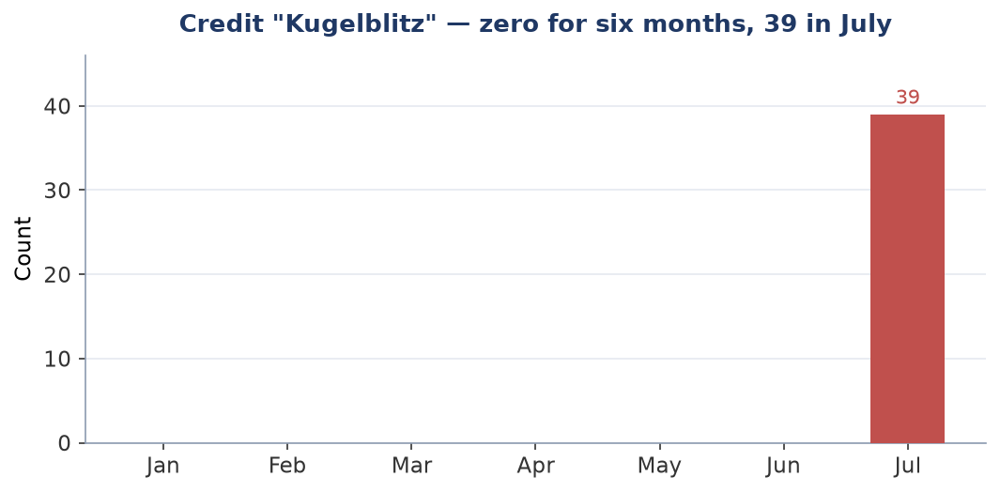
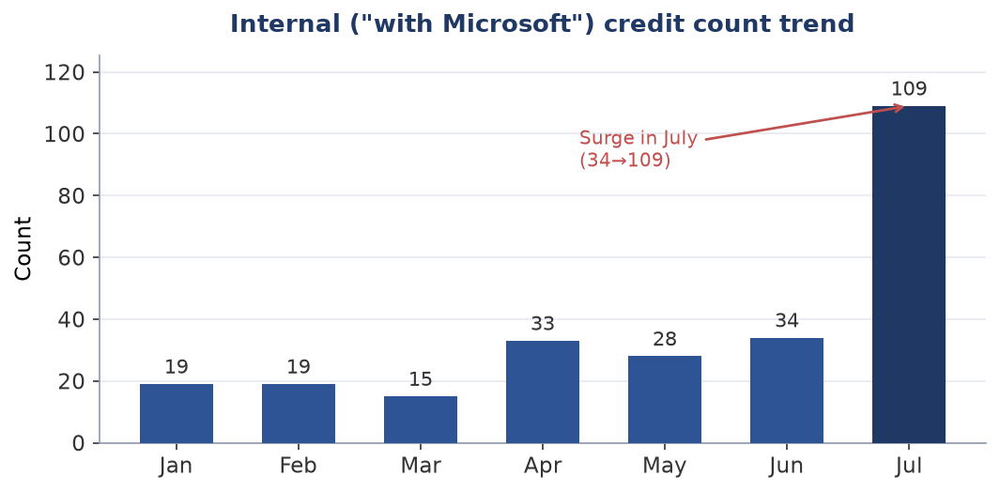

Technical report (machine-generated facts + human interpretation)
The surge in vulnerability discovery by frontier AI
A situational analysis as of July 2026, and its implications for practitioners responsible for vulnerability response
Practitioners and decision-makers responsible for vulnerability and patch response
About this report's structure and dates This report is composed by injecting human interpretation into a factual record (figures, tables, charts) generated by an automated monitoring script. Fact data acquired: 2026-07-15 (frozen as a snapshot) Interpretation (analysis) updated: 2026-07-19 Note: facts are automatic, interpretation is updated separately by a human. If the two dates are far apart, the interpretation may not reflect the latest facts. |
On MSRC's after-the-fact revisions This report is based on values finalized on 2026-07-15. MSRC revises past months after the fact (e.g., June CVE 1281→1205), so post-revision data may appear to give different results. Revision records are retained separately. |
[Disclaimer / Sources] • This report is an informal analysis by a hypothetical author projecting a practitioner responsible for vulnerability response; it is not the view of any specific individual or organization. • Fact data sources: Microsoft MSRC CVRF, CISA KEV, and other public information. • The analysis is generated with AI (a large language model). Facts are verified where possible, but accuracy and completeness are not guaranteed. Confirm important judgments against primary sources. • Facts are auto-updated but interpretation is updated as needed; the two dates may be far apart (see header). • Freshness: the facts in this report are as of 2026-07-15. KEV and PoC status change moment to moment; consult primary sources for the latest. |
[Note on neutrality] This report's analysis is generated using Anthropic's AI (Claude). The report refers to that company's Project Glasswing and the like, but this is intended as neutral description based on public information and does not endorse or advocate for any specific company. Readers should consult primary sources and judge independently. |
Executive summary
Microsoft's July 14, 2026 Patch Tuesday was reported at 569–622 CVEs, described as the company's largest ever. However, once the population is normalized using MSRC primary data, the reality is that June was the peak (724 for core Microsoft products) and July (665 for core Microsoft products) was actually a slight decrease. July's "record" is largely a product of the counting basis (folding in Edge/Chromium and the like). Either way, the counts remain elevated far above prior-year levels, and Microsoft itself has officially attributed the increase to its in-house AI tool, MDASH, finding vulnerabilities.
That said, from the standpoint of the actual operational workload of an organization responsible for vulnerability response, a calm assessment is warranted. First, the three zero-day vulnerabilities with confirmed exploitation this month were all discovered by human researchers (Microsoft's internal IR unit, Mandiant, etc.). Even so, it is not true that AI has failed to reach serious vulnerabilities at all. Microsoft's in-house AI (MDASH) had, as of May, already officially discovered and demonstrated 16 vulnerabilities, including 4 critical remote code execution (RCE) issues in networking/kernel. Second, when we traced the substance of the vulnerabilities AI mass-produced this month against primary data, the bulk (especially those attributable to the specific entity tracked in this report) were concentrated in the low-severity, auto-updating domain of Microsoft Edge (the browser). The count exploded, but the heavy work requiring off-hours maintenance did not increase.
Meanwhile, of the wave once predicted as "a flood of vulnerabilities within ~90 days of frontier AI's arrival," the portion arising from coordinated disclosure targeting third-party products and OSS (Anthropic's Project Glasswing) has not yet materialized as of today, pending expiry of the embargo period (confirmed via finder credits: Anthropic is involved in only a single joint-research credit, and even that is of minor severity — see the addendum). This is likely to arrive as a second wave going forward (from August onward).
Conclusion (in a sentence) There is no need to be rattled by the record CVE count. The increase in actual operational work is limited. What to monitor is not the "count" but two things: (1) growth in the heavy tier (vulnerabilities requiring change management), and (2) the coordinated-disclosure second wave that may arrive from August onward. |
Terminology: "full CVRF" vs. "core Microsoft products" in this report Full CVRF = every CVE record returned by Microsoft's vulnerability data API (MSRC CVRF) for a given month. In addition to Windows-proper and Office, it mixes in Edge/Chromium (issues fixed by Google and re-published by Microsoft), Mariner (Azure Linux), and Azure cloud services. When this report cites figures like "1,150," it refers to this. core Microsoft products = the above minus Edge/Chromium, Mariner, and Azure cloud. It approximates the range that news outlets count as "Microsoft's own figure" (569–622 for July). Why we show both: reported counts split into 569–622 depending on the counting basis, and none match the primary-data figure of 1,150. Comparison is meaningless without stating the population, so this report always shows both. |
Analysis: evaluating vulnerabilities across three tiers
"AI is mass-producing vulnerabilities" is true but too coarse. For defenders to make operational judgments, vulnerabilities must be decomposed into three tiers by who discovers them and by operational workload. This report's primary-data analysis supports the following structure.
Tier |
Primary discoverer (as of July 2026) |
Operational workload |
(1) The blade (exploited, serious vulnerabilities) |
Mainly discovered by humans. All three exploited zero-days this month were human. However, Microsoft's in-house AI (MDASH) officially discovered a kernel/networking Critical RCE in May. AI has begun to reach here too |
High (immediate response) |
(2) The surface — first-party products (the Edge etc. long tail) |
A new entity suspected of automation (Kugelblitz) appeared abruptly in July. The 39 tracked in this report are all low-severity Edge issues. Its identity (AI or not) is unconfirmed |
Low (resolved by auto-update) |
(3) The surface — third-party / OSS (coordinated disclosure) |
Via Glasswing/Mythos. Awaiting embargo expiry; not yet arrived as of today |
Medium (second wave; timing TBD) |
The crux: "the blade is mainly human, the surface is AI — but the boundary is moving"
What this primary-data investigation revealed is that AI-driven vulnerability discovery is being deployed mainly on the "surface" — the vast long tail that humans deprioritize as tedious relative to payoff, specifically the mechanical, exhaustive sweeping of the Edge browser's surface. The new credit "Kugelblitz" (39 issues, all low-severity) that appeared abruptly on Edge this month appears to be the archetype.
However, it is a mistake to simplify this as "the blade is all human." Microsoft's in-house AI tool MDASH had, as of May, already officially discovered 16 issues including Critical RCE in the most carefully reviewed core components, such as tcpip.sys (the kernel TCP/IP stack) and the IKEv2 service. AI started on the "surface," but it has already set foot in the "blade" domain. The movement of this surface-sweeping rising into core products has already begun, and its speed is the fork in the road ahead.
Note that the new Edge entity "Kugelblitz" tracked in this report and the officially AI-confirmed MDASH are entirely different things, targeting completely different domains (Edge vs. kernel/networking). Whether Kugelblitz is an in-house AI cannot be confirmed from today's primary information (see Appendix 5 and 6).
Implications and recommended actions for practitioners in regulated industries
The following are recommendations based on this report's analysis, not established regulatory requirements. Individual supervisory expectations of regulators must be confirmed against primary sources.
1. Shift your monitoring metric (top priority)
Stop using "CVE count" as a threat metric. Even professional tracking organizations disagreed on this month's count (569–622); as a metric it has already broken down.
Instead, track the month-over-month change in the "heavy tier" (server products, boot/crypto) that requires change management and maintenance windows. When that grows is the inflection point for staffing plans.
2. Move triage away from CVSS severity (most important; industry consensus)
Not just the count, but the "severity score" has also saturated and ceased to function. When a single release yields 600+ CVEs, most rated High/Critical, the "Critical" label stops helping prioritization. In fact, the two actually exploited this month were not flashy CVSS 9.8 issues but mid-tier privilege-escalation bugs.
Multiple external expert organizations have reached the same conclusion: CVSS-based prioritization predicts only about 2.3% of actual exploitation attempts, while forcing response to about 57% of all vulnerabilities.
Where to move: drop CVSS score alone and prioritize using CISA KEV (the catalog of vulnerabilities with confirmed exploitation) + EPSS (probability of exploitation within 30 days) + asset reachability. This aligns with regulators' risk-based supervision philosophy.
Note: In April 2026, NIST shifted the NVD (vulnerability database) to triage operation and declared some past CVEs "not scheduled for enrichment." The very data foundation underpinning CVSS can no longer keep up, which further supports moving away from CVSS.
3. Shorten the emergency-patch SLA
There are demonstrations that working exploit code can be generated in a short time with AI assistance from the diff of a released patch. Raise emergency-patch decisions from a "weekly" cadence to an "hours-to-days" cadence.
In particular, this month's confirmed-exploited zero-days (AD FS / SharePoint privilege escalation) are same-day response targets if you run a federation platform or on-prem SharePoint. Even if not yet listed in CISA KEV, act without waiting once Microsoft has flagged exploitation.
4. Verify that Edge/Chromium auto-update actually works
Since most AI-derived vulnerabilities concentrate in Edge, it is highly worthwhile to verify that Edge/Chromium auto-update is actually effective across all endpoints.
Pitfall: Electron/CEF-embedded apps (Teams, Slack, VS Code, etc.) do not benefit from browser auto-update. We recommend enumerating these dependencies via SBOM. A classic gap in large endpoint fleets.
5. Prepare for the second wave (coordinated disclosure; split patches)
From August onward, disclosure of Glasswing-derived OSS/third-party vulnerabilities may begin in earnest. Treat your own OSS dependencies as "not yet fixed," and prioritize compensating controls such as exposure reduction and segmentation.
Concrete risk (split patches): July fixed a SharePoint authentication bypass (CVE-2026-55040), but the companion RCE bug that chains with it into unauthenticated RCE is unpatched, with Microsoft slated to fix it in August. Because a single attack chain is fixed across multiple months, "we applied this month's fixes, so we're safe" does not hold.
Watch: red.anthropic.com, the NVD feed, CISA KEV. Anthropic's 90-day summary report is unpublished as of today and will require scrutiny once released.
Note that AI-driven vulnerability discovery is not limited to Anthropic (Glasswing/MDASH) or Microsoft's in-house effort. June's HTTP.sys vulnerability was reported by OpenAI's Codex; multiple AIs are contributing to discovery in parallel. Monitoring must not depend on a single vendor.
6. BCP for AI dependence
In June 2026, a top-tier AI model was halted for 19 days due to export controls. When embedding AI into a workflow, treat dependence on top-tier models as within BCP scope, and make model redundancy and fallback design the standard.
Primary-data breakdown — July 2026 Patch Tuesday
The following is a tally of primary data acquired from MSRC CVRF v3.0 (frozen snapshot 2026-07-15). The population is shown both as 'full CVRF' and as 'core Microsoft products' (excluding Edge/Chromium, Mariner (Azure Linux), and Azure cloud).
Table 1. By severity (two populations shown)
Severity |
Full CVRF |
(%) |
Core MS products |
(%) |
Critical |
67 |
6% |
62 |
9% |
Important |
594 |
52% |
545 |
82% |
Moderate |
55 |
5% |
52 |
8% |
Low |
6 |
1% |
5 |
1% |
Unrated |
428 |
37% |
1 |
0% |
Total |
1150 |
100% |
665 |
100% |
Table 1 (by severity) — key point
37% of the full CVRF (428 issues) is "Unrated," but for core Microsoft products it is just 1. Nearly all of the Unrated derive from the excluded Edge/Chromium and the like. This is the true source of the ~485 gap versus the "569–622" figures the press uses. What is needed is not the absolute count but a population-normalized comparison.
Table 2. By reboot class (the operational-workload axis)
Class |
Description |
Full CVRF |
Core MS products |
T3 |
Staged rollout required (Boot/Crypto) |
3 |
3 |
T2 |
Requires change management / maintenance window |
31 |
30 |
T0/T1 |
Auto-update / steady pipeline |
1116 |
632 |
Table 2 (by reboot class) — key point
97% of the record count (95% even for core Microsoft products) is T0/T1 — the tier absorbed by auto-update or existing monthly pipelines. The heavy tier (T2+T3) requiring careful staged rollout is only 34 issues even for the full CVRF. An explosion in count does not mean an explosion in operational workload.
Table 3. Finder major categories (full CVRF)
Category |
Count |
(%) |
Note |
Uncredited |
533 |
46% |
May include automation (not asserted) |
External researchers (named) |
366 |
32% |
Named external finders |
Anonymous |
98 |
9% |
Self-identified anonymous |
Internal (with Microsoft etc.) |
109 |
9% |
Includes Kugelblitz/MORSE/WARP/ACS |
Hash identifier |
44 |
4% |
MS-anonymized identifier (identity unknown) |
Table 3 (finder major categories) — key point
A finder's name does not mean "uncredited = AI." CVRF credits mix external discovery, internal discovery, anonymization, and declined credit; the AI-derived portion cannot be separated at the aggregate level (see Appendix 5). This table is a factual tally, not an attribution judgment.
Table 4. Finder breakdown of Critical vulnerabilities (aggregated, no names)
Discoverer |
Critical count |
Tendency |
External researchers (named) |
37 |
Majority of Critical |
Anonymous |
10 |
— |
Uncredited |
9 |
Possibly automation (not asserted) |
Internal (ACS/WARP/MORSE) |
7 |
Few (mainly Networking/Hyper-V) |
Hash identifier |
4 |
— |
Kugelblitz (Edge, ref.) |
0 |
Does not appear in Critical (surface only) |
Counts only (no personal names stored in the fact data). The top rows are per-bucket and sum to the Critical total. The Kugelblitz row is a cross-cutting reference (not additive). Individual researcher names and CVE examples are given as prose in the interpretation.
Table 4 (finder breakdown of Critical vulnerabilities) — key point
The overwhelming majority of Critical issues are still discovered by top-tier human researchers. Microsoft's in-house AI (the MDASH family = ACS/WARP/MORSE) has reached some Critical issues in networking/Hyper-V, but few. The Kugelblitz surge (39) in July is all low-severity Edge; not a single one appears in Critical. In other words, the report's three-tier model ("the blade is mainly human, AI has partly reached it, Kugelblitz is surface only") is corroborated by the breakdown of the 67 Critical issues.
Table 5. By product category (full CVRF)
Category |
Count |
(%) |
Edge/Chromium |
473 |
41% |
Win Services/Components |
154 |
13% |
Kernel/Driver |
111 |
10% |
Other |
102 |
9% |
Office/Word/Excel/PPT |
81 |
7% |
Networking |
57 |
5% |
Graphics/Media |
38 |
3% |
.NET/Dev |
25 |
2% |
RDP/Remote |
21 |
2% |
Auth/Identity |
17 |
1% |
SharePoint |
17 |
1% |
Microsoft (other) |
15 |
1% |
Azure/Cloud |
14 |
1% |
SQL/Dynamics |
9 |
1% |
Exchange |
8 |
1% |
Hyper-V/Virtual |
5 |
0% |
Boot/Crypto (T3) |
3 |
0% |
Table 5 (by product category) — key point
Edge/Chromium accounts for 41%, driving the inflation of the count (most resolved by auto-update). The "Other, 102" is a miscellaneous set — games (Age of Empires), bundled OSS (ClamAV, OpenSSH, NATS), AD DS, Configuration Manager, etc. — left under their original titles to avoid forced classification.
Addendum: inventory of credits suggesting "AI-related" (a baseline for second-wave monitoring)
To fact-check the summary's claim that "the coordinated-disclosure (Glasswing) second wave has not yet arrived," we verified it from the finder-credit angle. In July's CVRF, mechanically extracting credits whose string contains any of AI / agent / Anthropic / Claude / GPT / Copilot / LLM / automat yielded 36 matches. However, most are incidental substring matches (e.g., "SEC-agent team" is three people's names; KAIST, Akamai, and Trail of Bits merely happen to contain "ai").
As an important fact, Anthropic (the entity behind Project Glasswing discussed in this report) is actually involved in only 1 of the 36 credits (a researcher at Doyensec, jointly with Claude and Anthropic Research; CVE-2026-50479, Windows USB Hub Driver EoP; Important; T0/T1; first appearing in July).
This single case is (1) an individual instance in which one company, Doyensec, discovered it jointly with Anthropic's research division — not a synchronized embargo lift of coordinated disclosure (Glasswing) — and is a separate track from what this report calls the "second wave"; and (2) Important severity, in the auto-update tier (T0/T1), with minor operational impact. Therefore, the report's conclusion — "serious vulnerabilities (the blade) are mainly discovered by humans, and the Glasswing-derived second wave has not yet begun in earnest" — is unchanged by this fact (if anything, it is reinforced).
Note that this inventory is retained as factual data generated by the monitoring program in a private repository, to serve as a baseline for comparing whether "AI-related credits increase" and "whether they reach serious (Critical) vulnerabilities" in coming months. The policy of not asserting the true identity of a discoverer from a credit name is maintained (per the lesson of this report's misidentification of Kugelblitz as MDASH, refuted by primary information).
Comparison with historical data — the January–July 2026 trend
Below is a monthly trend composed only of real numbers unaffected by acquisition timing. Metrics that fluctuate with acquisition lag, such as the uncredited ratio, are intentionally excluded for accuracy (see Appendix / Rejected #3).
Trend table (only real numbers robust to acquisition lag)
Month |
CVE full |
CVE core |
Critical |
Heavy(T2+T3) |
Kugelblitz |
Internal(MS) |
Jan |
310 |
287 |
30 |
9 |
0 |
19 |
Feb |
169 |
141 |
12 |
1 |
0 |
19 |
Mar |
460 |
372 |
26 |
8 |
0 |
15 |
Apr |
737 |
611 |
41 |
34 |
0 |
33 |
May |
991 |
588 |
52 |
19 |
0 |
28 |
Jun |
1281 |
724 |
89 |
45 |
0 |
34 |
Jul |
1150 |
665 |
67 |
34 |
39 |
109 |

Fig 1: Total CVE count trend (full CVRF / core Microsoft products)
Figure 1 (total CVE count) — interpretation
The press reported July as "a record 570–622," but that is due to the counting basis (folding in Edge/Chromium, Mariner, etc.). Normalizing the population with MSRC primary data, the reality is that core Microsoft products peaked in June (724), and July (665) is actually a slight decrease. Either way, the second half of 2026 remains elevated, and this conclusion does not change.

Fig 2: Critical count and heavy tier (T2+T3) trend
Figure 2 (Critical and the heavy tier) — interpretation
The heavy tier (T2+T3), the essence of operational workload, moves violently up and down — 9→1→8→34→19→45→34 — not a monotonic increase. Rather than the simple trend of "AI steadily grows the heavy tier," what matters is the large month-to-month variance. Staffing plans should assume the variance — "a 45-class month can arrive at any time" — not the average trend.

Fig 3: Monthly appearance of the credit "Kugelblitz"
Figure 3 (Kugelblitz) — interpretation
The credit "Kugelblitz," tied to Edge vulnerabilities, did not appear even once from January to June, then abruptly appeared 39 times in July. This discontinuity cannot be explained by acquisition timing, formatting variance, or headcount growth, and indicates that some new process was introduced in July. However, its identity (whether an in-house AI, and its relationship to MDASH) is unconfirmed as of today (see Appendix / Rejected #5).

Fig 4: Internal ("with Microsoft") credit count trend
Figure 4 (internal discovery) — interpretation
Internal credits (the "with Microsoft" family) hovered at 15–34 through June, then surged to 109 in July. This includes Kugelblitz (39) and the WARP/ACS teams (Microsoft internal teams, 5). In the same month, Microsoft officially announced full deployment of MDASH. However, this is a coincidence of timing, and the causation is unconfirmed in this report. There is no evidence that the surge in internal discovery or the appearance of Kugelblitz is due to MDASH; we do not jump from a coincidence of name and timing to causation (avoiding the same trap as the Kugelblitz = MDASH misidentification).
What the trend tells us (summary) Contrary to press reports, the peak in count is June (in primary data, when the population is normalized). July's "record" is an artifact of the counting basis. The heavy tier is highly variable, not monotonically increasing. Staffing must assume the variance. In July, the appearance of Kugelblitz (0→39) and the surge in internal discovery (34→109) occurred simultaneously. In the same month there was an official announcement of full MDASH deployment (a coincidence of timing; causation unconfirmed). |
KEV / EPSS — prioritizing immediate response
The following cross-references the target CVEs (T2/T3 ∨ Critical ∨ external-researcher credit) against CISA KEV and FIRST EPSS. KEV = a discrete fact of confirmed exploitation (the notification trigger). EPSS = an estimate of exploitation probability (a point-in-time value, changes daily, for reference). No discoverer or causation is asserted from these numbers.
Immediate-response targets — listed in CISA KEV (as of 2026-07-17)
CVE |
Product |
Severity |
Reboot class |
CVE-2026-56164 |
Microsoft SharePoint Server |
Moderate |
T2 |
CVE-2026-58644 |
Microsoft SharePoint |
Critical |
T2 |
Top EPSS — estimated exploitation probability (as of 2026-07-16)
CVE |
Product category |
EPSS |
Percentile |
CVE-2026-50522 |
SharePoint |
0.2035 |
97.2% |
CVE-2026-50518 |
Networking |
0.0736 |
93.7% |
CVE-2026-56164 |
SharePoint |
0.0560 |
92.0% |
CVE-2026-49170 |
Win Services/Components |
0.0251 |
83.0% |
CVE-2026-50423 |
Kernel/Driver |
0.0248 |
82.7% |
CVE-2026-50509 |
Other |
0.0231 |
81.5% |
CVE-2026-50667 |
Kernel/Driver |
0.0216 |
80.1% |
CVE-2026-49798 |
Kernel/Driver |
0.0215 |
80.1% |
CVE-2026-49805 |
Kernel/Driver |
0.0209 |
79.5% |
CVE-2026-49795 |
Kernel/Driver |
0.0179 |
75.9% |
CVE-2026-50329 |
Graphics/Media |
0.0175 |
75.3% |
CVE-2026-58536 |
Kernel/Driver |
0.0175 |
75.3% |
CVE-2026-54986 |
Kernel/Driver |
0.0173 |
75.0% |
CVE-2026-54114 |
Kernel/Driver |
0.0173 |
75.0% |
CVE-2026-50433 |
Graphics/Media |
0.0173 |
75.0% |
Note: EPSS is updated daily and its values change. The table above is a point-in-time snapshot (as of 2026-07-16) and is not used as a standalone trend metric. Only KEV is used as a notification trigger (EPSS is not).
Note: product names (KEV table) and product categories (EPSS table) are sourced from the CVRF (2026-07-15 frozen snapshot) — a separate source and point in time from KEV listing status and EPSS values. Categories use the same classification as Table 5. No discoverer or causation is asserted from these product names/categories.
Appendix: investigation procedure, sources, and accountability record
This appendix records the investigation process leading to the main conclusions, including hypotheses that were rejected or revised along the way. Its purpose is to ensure reproducibility and accountability. In particular, by explicitly stating the metrics that seemed promising initially but were later rejected, it clarifies which grounds the final conclusion relies on — and which it does not.
1. Purpose and question of the investigation
The initial question: "It is said that within roughly 90 days of the arrival of so-called frontier AI, a flood of vulnerabilities and patches emerges — is that actually so? Analyze the situation as of today."
To answer this, in addition to secondary information such as news, we took the approach of directly acquiring and analyzing the primary data published by the Microsoft Security Response Center (MSRC). We went to primary data rather than settling for a summary of secondary information because outlets disagreed on the CVE count, casting doubt on the reliability of the count metric itself.
2. List of sources
2.1 Primary data sources
MSRC CVRF API v3.0 (public, unauthenticated REST API) — provides monthly security updates as structured, per-CVE data (JSON). Includes finder credits (Acknowledgments), severity, exploitation status, and affected products.
Endpoint: https://api.msrc.microsoft.com/cvrf/v3.0/cvrf/{YYYY-MMM}
Schema-validation reference: microsoft/MSRC-Microsoft-Security-Updates-API (GitHub)
Anthropic Project Glasswing official page (checking the second-wave status): anthropic.com/glasswing and the initial update (5/22)
Microsoft Security Blog: MDASH announcement (5/12): Defense at AI speed (MDASH's identity, target CVEs, ACS/MORSE/WARP structure) — the primary basis for distinguishing it from Kugelblitz
2.2 Secondary sources (press / expert analysis)
Used to confirm July Patch Tuesday's counts, attribution, and notable vulnerabilities. The very fact that counts differ by source was treated as evidence of the count metric's breakdown.
BleepingComputer (570; explicit counting basis; Edge 468 excluded)
Krebs on Security (MDASH attribution; the Windows EVP's statement; a Tenable analyst's comment)
SecurityWeek · CyberScoop · Tenable (622/622/569 respectively)
Schneier on Security (skepticism toward Glasswing's data; referenced to avoid a single viewpoint)
Brinqa monthly analysis (makes the difference in counting basis explicit; core-count baseline comparison; corroborates this report's population separation)
On the industry trend of moving off CVSS (EPSS+KEV): The Hacker News (July) · Hackerstorm (NVD triage shift; CVSS predictive accuracy 2.3%)
3. Data acquisition method
The MSRC CVRF API is public and unauthenticated, but it could not be accessed directly from the analysis environment (an AI sandbox) due to an egress allowlist restriction. Therefore, the analysis logic was written as a Python script and run in the data collector's local environment.
This is an important procedural note: the figures in this report were not generated by AI, but are real data acquired by the data collector hitting the primary API in their own environment. The AI's role is limited to designing the logic (scripts) and interpreting the results. The script logic was cross-checked for schema assumptions against a real open-source CVRF parser, and its output was further validated against real data.
4. Analysis procedure (chronological)
Cross-checking the press: confirmed July Patch Tuesday's count across multiple sources. Established that they disagree (569–622), that Microsoft officially attributes the increase to MDASH (in-house AI), and that all three exploited zero-days were human-discovered.
Primary-data acquisition: acquired each month's data from the MSRC CVRF API for January–July 2026.
Decomposing the count: attempted folding into remediation-action counts and reboot classes. Confirmed that the CVE count is excessive as a metric of defensive workload (auto-updating items such as Edge make up most of the count).
Estimating attribution: attempted to separate the AI-derived portion from finder credits. Created several metrics, but rejected many of them (see Section 5).
Identifying the decisive signal: confirmed the discontinuous appearance of the credit "Kugelblitz" — January = 0, April = 0, July = 39 (Edge vulnerabilities, all low-severity, auto-update tier). We initially judged this to be a trace of Microsoft's in-house AI tool (MDASH), but subsequent verification (Section 5 / Rejected #5) found this assertion to be wrong.
Integrating the conclusion: organized into a three-tier model (blade = human / surface, first-party = AI, minor / surface, third-party = not yet arrived).
5. Metrics rejected or revised during the investigation [important]
For accountability, we record the metrics initially adopted but later rejected or revised. The final conclusion does not rely on these rejected metrics.
Rejected #1 — CVE count (raw count): disagrees by source (569–622). The inclusion basis for Mariner, Azure, and Chromium re-publications differs by outlet. Not used as a threat metric. However, it is valid as the qualitative fact of "a record" and as evidence of the metric's breakdown.
Rejected #2 — remediation-action count: because it is bounded by the number of update channels the analyst defined, it is weak as a workload metric. The reboot-class concept was carried into the main report's three-tier model, but the numbers themselves are not used as grounds for the conclusion.
Rejected #3 — the trend of the "uncredited ratio": initially, we interpreted the rise in the ratio of uncredited CVEs (62% in January → 83% in June) as MDASH's footprint. But it plunged to 46% in July, which could not be explained. We first tried to explain this by "data acquisition-timing lag," but since all months were acquired on the same day, that explanation does not hold. The behavior of this metric is not fully understood, and it was excluded from the grounds for the conclusion. Lesson: CVRF finder credits mix external discovery, in-house AI discovery, and declined credit, and are unsuited to separating the AI-derived portion at the aggregate level.
Revision #4 — Kugelblitz "78" → "39": initially hand-counted as 78 via grep. This double-counted the double-listing where the same name appears twice on one CVE. The correct value, deduplicated per CVE, is 39. The conclusion itself — the 0→0→39 discontinuity — is unchanged.
Rejected #5 — the assertion "Kugelblitz = MDASH" (the most important correction): initially, we asserted that "Kugelblitz," which appeared abruptly on Edge, was a trace of Microsoft's in-house AI tool MDASH. However, verification against primary information found this assertion unsupportable. Grounds: (1) the CVEs officially credited to MDASH (the 16 published in May) are networking/kernel vulnerabilities such as tcpip.sys and IKEv2, not Edge; (2) the name "Kugelblitz" never appears in Microsoft's official blogs — what appears is MDASH, ACS, MORSE, WARP; (3) Kugelblitz is confined to Edge (Chromium), a completely different domain from MDASH. Current treatment: Kugelblitz is "a new entity that appeared abruptly in July (0→0→39). The patterns of sequential concentration, single naming, and double-listing suggest automation, but there is no evidence that it is AI, let alone MDASH. Its identity is unconfirmed as of today." Lesson: it is dangerous to tie something to a specific entity on circumstantial evidence alone; do not assert until the name match is confirmed against primary information.
6. Grounds ultimately relied upon, and their limits
6.1 Grounds relied upon (confidence: high)
Record count: multiple independent expert organizations agree on "the company's largest ever, ~3x June" (the absolute count disagrees, but the fact of a record agrees).
Microsoft's self-report: Microsoft's Windows EVP officially stated in the 7/9 blog the full deployment of MDASH (multi-model agentic scanning harness) and the increased update volume. As a primary self-report, confidence is high.
MDASH's official demonstration: Microsoft published in May, with CVE numbers, that MDASH discovered 16 issues including 4 Critical RCEs in tcpip.sys, IKEv2, etc. That AI reached serious vulnerabilities in core components is confirmed by primary information. MDASH is operated through the collaboration of ACS/MORSE/WARP.
Kugelblitz's discontinuity (attribution unconfirmed): the new credit "Kugelblitz" tied to Edge vulnerabilities appeared discontinuously — January = 0, April = 0, July = 39. The breakdown (all low-severity, auto-update tier) is confirmed in primary data. However, the identity of this entity (AI or not) is unconfirmed, and it is a different thing from MDASH (Section 5 / Rejected #5).
The zero-days' finders: confirmed in primary data (Acknowledgments) that all three confirmed-exploited issues this month (AD FS / SharePoint / BitLocker) were discovered by humans.
6.2 Limits (confidence: unconfirmed / caution)
The identity of "Kugelblitz" is unknown as of today. We cannot determine whether it is an in-house AI, a re-crediting process for Chromium-derived vulnerabilities, or a human team name. Its target domain differs from MDASH, and there is no evidence they are the same.
Beyond what MDASH officially credited (the 16 in May, etc.), the AI-derived portion filed without a name is not captured. The full picture of the AI-derived portion remains unmeasurable at the aggregate level.
The scale and timing of the Glasswing second wave are a prediction, not confirmed information. Anthropic's 90-day summary report is unpublished as of today.
The individual regulatory matters referenced in this appendix are outside the scope of this primary-data analysis and require confirmation against primary sources.
7. Reproduction procedure
The figures in this report were acquired with the aggregation tooling used at the time of the investigation. An equivalent aggregation can be reproduced with collect.py / diff.py in the public repository msrc_monitor (requires Python 3, requests, and a network that can reach the MSRC API). Note that because MSRC revises past months after the fact, an exactly identical value is not guaranteed to reproduce (for the treatment of revisions, see the report header and the snapshot-freeze policy).
(1) Acquire each month's primary data (collecting Jan–Jul 2026): python collect.py --backfill 2026-Jan 2026-Jul
(2) Month-over-month comparison, threshold checks, and new credits (including Kugelblitz): python diff.py 2026-Jul
(3) Finder-credit tally (deduplicated per CVE; for audit): refer to credit_counts / finder_bucket in state/2026-Jul.json (generated by collect.py)
Confidence tiers (grading of this report's claims) [High] The record count agrees across multiple sources (though the peak is June once the population is normalized) / Microsoft officially attributes the increase to AI / MDASH officially discovered a kernel/networking Critical RCE in May / the exploited zero-days were all human-discovered (DART/Mandiant) / Kugelblitz appeared 0→0→39 in July, all Edge and low-severity / the saturation of the count metric and CVSS severity is industry consensus [Medium] The organization into a three-tier model / the view that AI discovery is expanding from mainly "surface" into core products / the view that the second wave will arrive from August onward [Unconfirmed] Kugelblitz's identity (in-house AI or not; a different thing from MDASH) / the overall scale of the AI-derived portion (unmeasurable at the aggregate level) / the exact scale and timing of the Glasswing second wave / individual regulatory matters (require primary confirmation) [Caution] This report's full-CVRF Critical count (e.g., 89 in June) includes Edge/Chromium and the like, diverging from the press's core value (32–39 in June). It is useful for grasping trends, but use the core Microsoft products column for external comparison of absolute values. |
This report was produced through dialogue with an AI assistant (Claude). Primary-data acquisition and execution were performed in the collection environment, and the figures are based on those execution results. Because the interpretation and analysis include AI contribution, re-confirmation against primary sources is recommended when using this for important decisions.